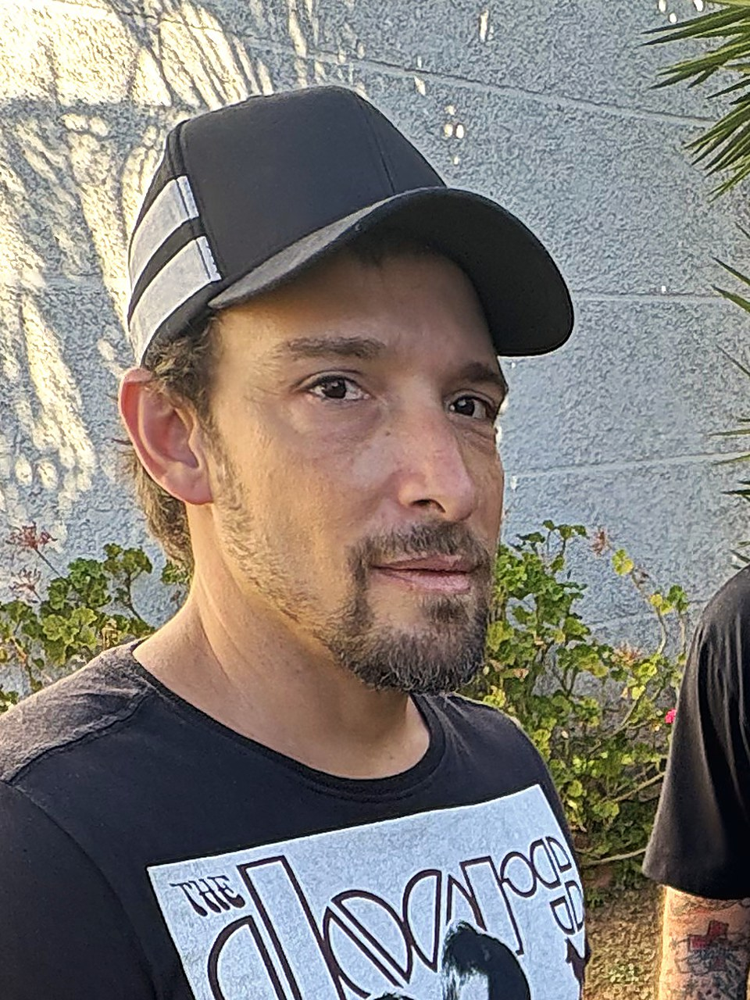
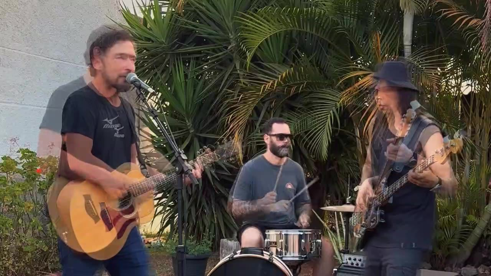
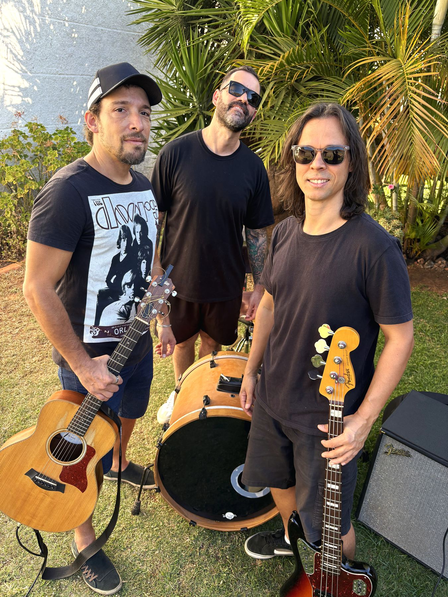
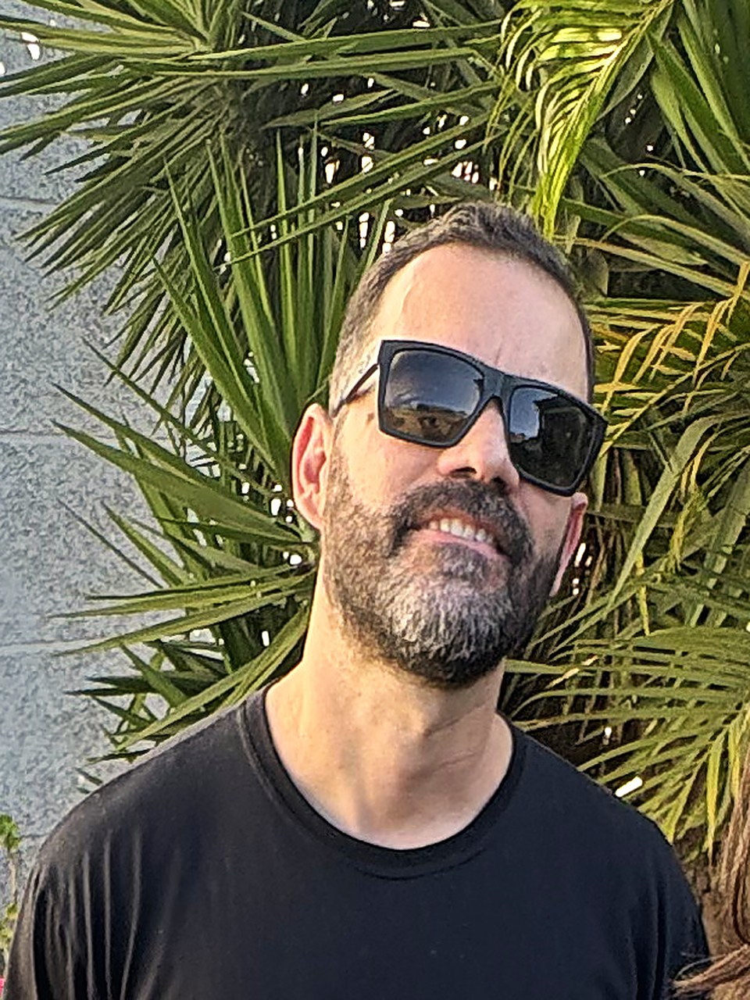
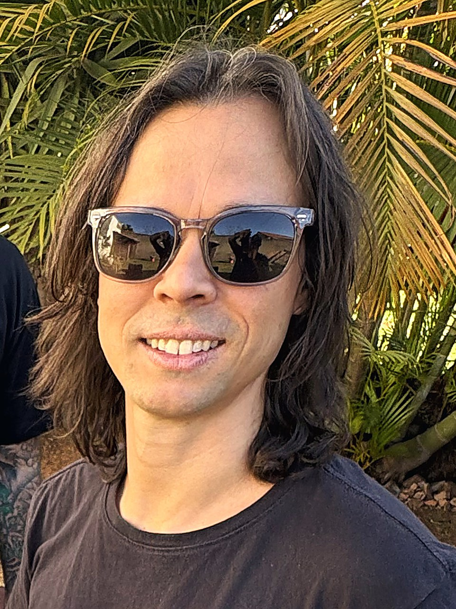

Voz e violãoVocals & guitarRafael Z
Cantor e compositor de Brasília. Carreira solo e outros projetos emSinger and songwriter from Brasília. Solo work and other projects at rafaelzeredo.github.io.

Garden Session · 07.2026GigZ é um power trio de Brasília: voz e violão, baixo e bateria, tocando juntos como se fosse sempre a última música da noite.GigZ is a power trio from Brasília: voice and acoustic guitar, bass and drums, playing together as if every song were the last one of the night.
Em 2023, de volta a Brasília depois de uma temporada na praia, Rafael Z reencontrou bons amigos que tinham tocado na banda Dashan. Eles se conectaram musicalmente e a amizade seguiu. Em 2026, dessa amizade e dessa afinidade, nasceu a GigZ.In 2023, back in Brasília after a spell on the coast, Rafael Z met good friends who had played in the band Dashan. They connected musically and the friendship carried on. In 2026, out of that friendship and that chemistry, GigZ was born.
O repertório passeia pelo rock, pelo reggae, pelo blues e pelo soul, de Sublime e Jimi Hendrix a Charlie Brown Jr. e Stevie Wonder.The set moves through rock, reggae, blues and soul, from Sublime and Jimi Hendrix to Charlie Brown Jr. and Stevie Wonder.

O formato clássico do power trio: nada sobrando, nada faltando.The classic power-trio format: nothing extra, nothing missing.

Voz e violãoVocals & guitarCantor e compositor de Brasília. Carreira solo e outros projetos emSinger and songwriter from Brasília. Solo work and other projects at rafaelzeredo.github.io.

BateriaDrumsO pulso da banda: bumbo, caixa e pratos que seguram o groove do reggae ao blues.The band's pulse: kick, snare and cymbals holding the groove from reggae to blues.

BaixoBassAs linhas que fazem o trio soar grande, no meio entre a voz e a bateria.The lines that make the trio sound big, right between the voice and the drums.
Uma tarde de julho de 2026, ao ar livre. Uma câmera, três músicos, sem overdubs.One afternoon in July 2026, in the open air. One camera, three musicians, no overdubs.
Gravado num ensaio ao ar livre, com o som do próprio celular: o que se ouve é a banda tocando ao vivo, sem overdubs nem correções, só com equalização e masterização. Os filmes com ▶ estão disponíveis (“Isn’t She Lovely” é um trecho); o resto do set ficou só na memória daquela tarde.Recorded at an open-air rehearsal, with the phone's own sound: what you hear is the band playing live, with no overdubs or fixes, only EQ and mastering. Songs marked ▶ have a film (“Isn’t She Lovely” is an excerpt); the rest of the set lives only in the memory of that afternoon.
Os filmes completos da sessão e um corte curto para redes sociais.The full session films and a short cut for social media.

Bares, festas, eventos, festivais e celebrações: a GigZ leva o power trio até você. Mande data, local e tipo de evento e receba uma proposta.Bars, parties, events, festivals and celebrations: GigZ brings the power trio to you. Send the date, venue and type of event and get a quote.